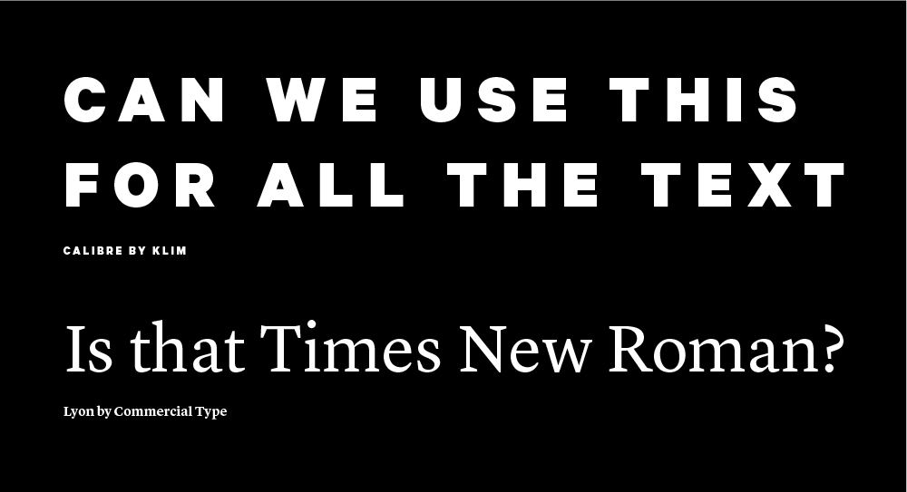
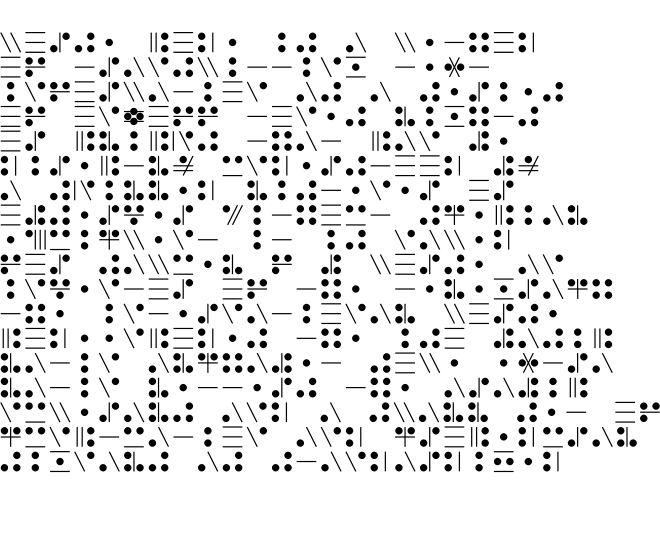

week 3September 7–13
— Breaking Things Deliberately, Tobias Frere-Jones
A method of authorship is frontloading with your own experiments before projects even exist. That way you have your own repository to pull from, in turn taking it one step further from visual research only composed of other people’s work. Reminds me of when Keetra Dean Dixon came to WashU and spoke about her process. Both designers also show how self-direction prior to entering the commercial workplace is crucial to establishing individual voice, as well as how the past always informs the present.
“We had been standardized. We were all speaking a different language now. It was the language of Facebook—of computers.”
“How Facebook Has Flattened Human Communication†— David Auerbach: In environments where the visual representation of our words is homogeneously predetermined, how powerful is it to spend time crafting individual letters that work together for legible harmony (or deliberately illegible disharmony) but that also reflect the content in a different voice? How powerful is it to slow down and think about what we’re writing but also think about what the letters mean formally? 140 sans-serif characters? Reactions reduced to a set of 5 emojis? The first impression is how the letters appear, conscious or not.
Letters are beautiful. Abstract shapes that become even more meaningful when someone uses them.
But if everyone is using the same shapes, what values are we reinforcing?
Homogeneity is not necessarily unity. It can mean competition.

I was creating a flyer for a student group and one of the group members thought the serif I used was Times New Roman. When I said it wasn’t, she immediately retracted her dissatisfaction. What does that mean?
She loved the all caps, tracked out, bold geometric sans though.

Modern Typography — Robin Kinross: Thoughts prompted by Chapter 2: Enlightenment Origins
“Modern typography exhibits a rational impulse, both internally in ordering its own working, and externally in the face it presents to the world.”
— pg. 16
“By a typographer, I do not mean a printer, as he is vulgarly accounted, any more than Dr Dee means a carpenter or mason to be an architect: but by a typographer, I mean such a one, who by his own judgement, from solid reasoning within himself, can either perform, or direct others to perform from the beginning to the end, all the handy-works and physical operations relating to typographie.†(Joseph Moxon, Mechanik exercises: or the doctrine of handy-works applied to the art of printing, quoted by Kinross pg. 15).
A typographer is as much as a practitioner as a reasoner, and these things can be taught. Typography is based in reason and rational thought, but it is not a science.
— romain du roi italic

Romain du roi introduced units for different body sizes and using the grid. It represents the move toward rationalization and order, and anticipates pixels and how fonts are constructed today (a fine grid of points).
A possibly incorrect assumption of mine: Italics are rooted in handwriting, so what happens when you try to apply that to a grid? An effect of rectilinear units and coordinates is that it leads to sloped romans instead of true italics, which precedes the oblique styles of sans serifs.
Chapter 3: The Nineteenth-Century Complex: Printing was full of working-class labor, roots of underserved, arduous workers:
“They quit, they cheated on their ‘voyage’; they collected small advances on the next week’s work (‘salé’) and then disappeared; and sometimes they spied for rival publishers or the police.†(p.27, Kinross quoting historian of book production in 18th century France). A reminder that things were way more intense back then.
Hard labor motivated workers to take shortcuts to make the work easier, not dissimilar to type designers today using programming and scripting to automate tedious and repetitive processes. Some say it allows more time to be allotted toward designing instead of pixel pushing.
Chapter 4: Reaction and Rebellion:
“The idea of freedom (‘as having skilled and unaffected boldness’) was essential to [Edward Johnston], as was that of constraint: ‘True spontaneity, however, seems to come from working by rule, but not being bound by it’…‘Set no limit to your hopes (which may contemplate Eternity) but every limit of the moment to your work’”
— pg. 39

How to make CDs spin again: hang them on push pins.

— Viktor, robotic chalk drawing machine
Was reintroduced to Jürg Lehni, and looking at his work beyond Apple Talk got me thinking about not just human error affecting digital platforms, but how Earth’s physics affect precise, programmed tools.
The physics of the internet vs. the physics of Earth
His project “Viktor†is also a nice resolution of the conflict between genuine roughness of material and electronically powered machines.
Jürg was also one of the people who made Scriptographer. Go figure.
The intersection of type, tech, and our relationship to digital forms and the internet is where it’s at.

— NON Dit-Dah font
Formist is releasing limited edition fonts in a series called NON. The types are intended to “form a new universal language,†which kind of doesn’t make sense if the font is limited to 10 copies… and because the letters are also not legible. In any case, a universal language is not achievable. Right now. Well actually it’s not immediately legible but you could learn how to read it… It’s not dissimilar to cuneiform or hangul. It’s alt-English.
Dit-Dah is based on the forms of morse code, and its dot/line modules were used to construct approximations of letterforms. “This system simultaneously acknowledges both the written letterform and transmitted code form, and in turn, forms a third abstracted universal language.”
Not sure how I feel about the idea of a limited edition font. It’s kind of breaking my brain to think about it and the physics of digital “material.”
“Perhaps we reveal ourselves too much in small things because we have so little of the great to conceal. The tiny incidents of daily routine are as much a commentary of racial ideals as the highest flight of philosophy or poetry.”
— pg. 44, The Book of Tea by Kakuzo Okakura
“A special contribution of Zen to Eastern thought was its recognition of the mundane as of equal importance with the spiritual. It held that in the great relation of things there was no distinction of small and great, an atom possessing equal possibilities with the universe.†(p.70)

Slow Reader: A Resource for Design Thinking and Practice — Ana Paula Pais & Carolyn F. Strauss (eds.)
Part of the “Long List of Rational Reasons of Why I Like Type Design†is that making a typeface takes a long time. It’s a nice contrast to the rush and immediacy of everything else. The speed of graphic design can sometimes make it feel quite meaningless.
Something that has been stuck in my head is:
ephemeral design, ephemeral emotion
You know when you hold something and it’s just full of emotion? That’s usually because someone put a lot of time and care into it.
The speed in which we design and produce work is tied to life’s timeline and capitalist demands. But not everything is precious and needs years to be made. The alternative of a gradual work is just nice. It’s somewhat of a protest.
With that said, the essays in this book so far touch on systems and language (or at least that’s what I’m choosing to pull out):
“We must learn about how the place where we are is forced upon us in its being, how the powers that be determine our lives, and how we can keep agency in that, and bring our own idea of a relationship.†(pg. 47, “Preparing for the Not-Yet†by Jeanne Van Heeswijk)
“We see words from the economic sphere being applied in the artistic and cultural spheres. A few examples in which I think language really betrays us: to capitalize (ideas), to produce (art), ‘work’ (instead of oeuvre), strategy and ‘projects’ when we refer to the process of creation, while at the same time we let creativity be co-opted by corporate language.
…The lack of criticality and self-reflection in the educational system, the lack of freedom, is intentionally designed as a political instrument. We witness a deliberate imposition on the child of a model of life based on the logic of automatism and the idea of professionalism, which does not allow the child to develop a certain sensitivity.†(pg. 76–77, “The Art of Conversation and the Aesthetic of Process†by Emilio Fantin)
“Often we feel trapped in one system, and we feel the system is so much larger than we are; but we are the ones who are keeping that system going. So once you recognize the inequity, and trace how your own body is being disciplined and kept in a certain place, you can begin to think through how you might design intervention, as a creator of cultural material.†(pg. 90, “Decolonization As Care†by Uzma Z. Rizvi)
“In all of my experience, however, the mode of resistance has only ever worked through collaboration, finding allies and solidarity with others.”
— pg. 94, “Decolonization As Care†by Uzma Z. Rizvi

— stephennixon.com
Stephen Nixon came to WashU to give a little talk last Friday.
His point was basically:
Be a human.
It was pretty neat getting to chat with a recent graduate of the Type Media program. Coincidentally he wrote the Drawbot notes that I followed earlier in the year. Designers are cool and helpful. Plus he made a sick blackletter font out of pizza emojis. What a dude.
Again I wonder how I ended up at WashU, and then somehow the Type & Letterform class, and then somehow the design program, and—
Education is a huge privilege.
It’s “easy†to work hard when you like what you’re doing. I get lost when I follow the herd, but when I follow the work, it all makes sense. It’s all traceable, and it’s all honest.
So yeah keep making stuff that you’re inclined to make. And believe in something.